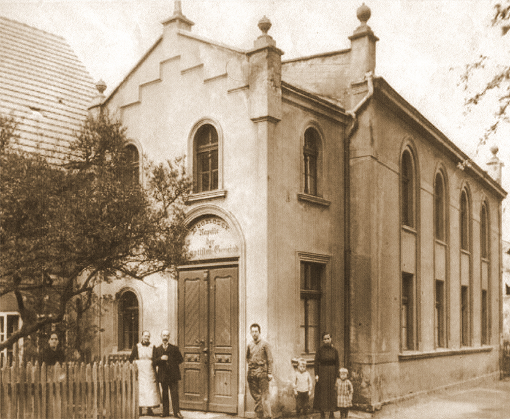
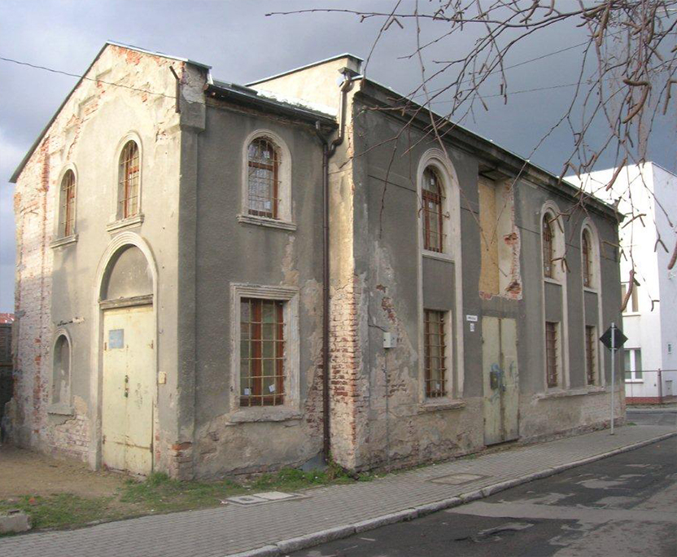
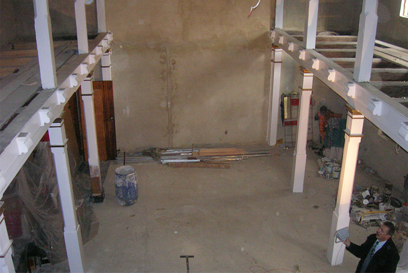
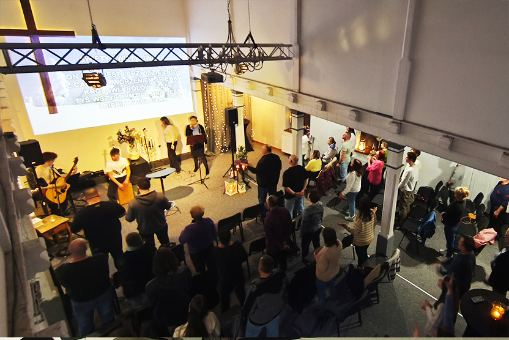
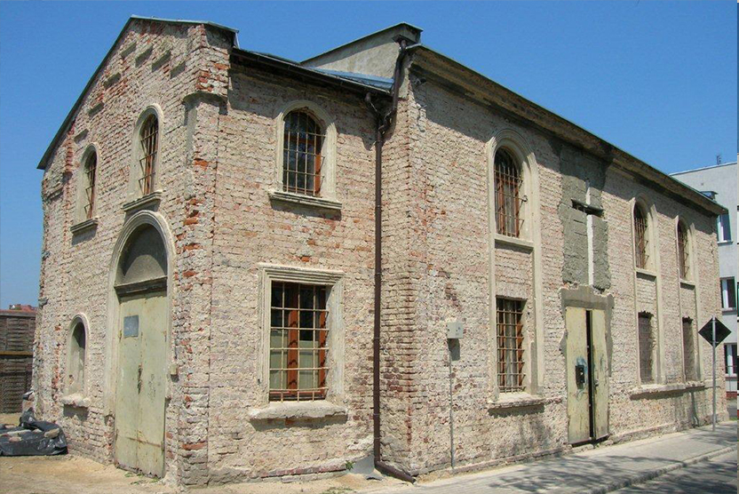
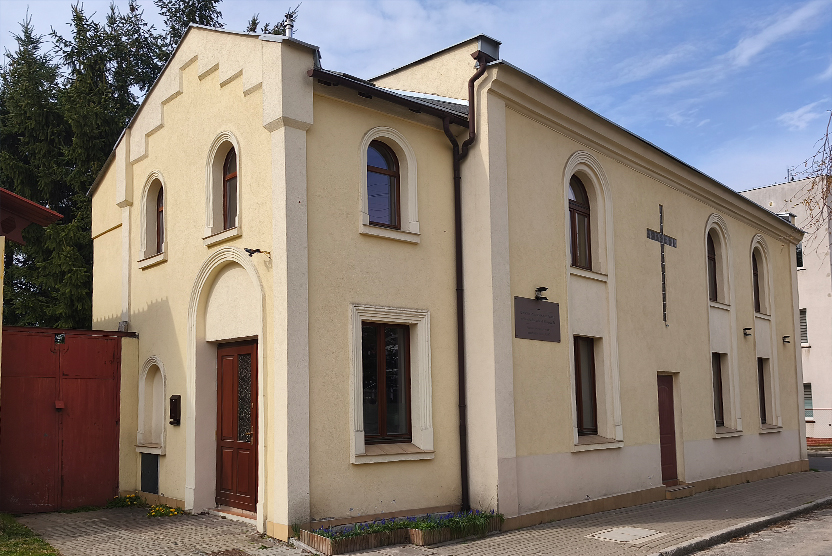

Historia
Kościoła Zielonoświątkowego w Świebodzicach zaczęła się w 1999 r. od niezwykłego snu pastora z Kamiennej Góry - Jacka Zatyki. Dwukrotnie śnił o tym, jak głosi Słowo Boże przy kamiennym murze w Świebodzicach. Gdy po raz pierwszy odwiedził nasze miasto - rozpoznał miejsce ze snu. Zrozumiał, że Bóg powołuje go do działania w Świebodzicach. Rozpoczął poszukiwania wierzących w naszym mieście, nawiązując kontakt z okolicznymi zborami. Wkrótce zaczęła formować się pierwsza grupa wierzących osób, które podzielały wizję pastora. Spotykano się w domach i w wynajmowanych salach w mieście, modląc się, chwaląc Boga i studiując Biblię.
Kolejnym przełomem był rok 2003, kiedy wspólnota rozpoczęła remont kaplicy, zakupionej od społeczności Baptystów. Budynek funkcjonował do czasu wojny jako dom modlitwy. Niszczał nieużytkowany, a w czasach PRL był przejęty przez państwo. Pełnił również rolę magazynu. w 2001 roku obiekt wrócił do Baptystów. Budynek był w stanie ruiny.
16.12.2004 r. Kościół Zielonoświątkowy w Świebodzicach został oficjalnie zarejestrowany, a w 2007 r., po latach pracy i zaangażowania całej ówczesnej społeczności, w odnowionej kaplicy odbyły się pierwsze nabożeństwa.
W tym samym czasie Lucyna i Zdzisław Niemiec zaczęli służbę w Świebodzicach. 16.01.2008 r. Zdzisław został powołany na pełniącego obowiązki pastora, a 10.01.2009 r. objął tę funkcję na stałe. Razem z rodziną przeprowadzili się do miasta i w pełni zaangażowali w życie kościoła.
Od tego momentu społeczność kościoła zaczęła się dynamicznie rozwijać — powstawały kolejne służby, w tym - kobiet prowadzona przez Lucynę Niemiec. Rozwijała się praca z dziećmi i młodzieżą, w którą byli zaangażowani synowie pastorów. Kościół coraz mocniej zaznaczał swoją obecność w mieście. Organizowano ewangelizacje, pikniki rodzinne, koncerty i działania pomocowe, budując relacje z mieszkańcami i odpowiadając na realne potrzeby.
Równolegle rozwijała się przestrzeń kościoła — kolejne etapy remontów, inwestycji i rozbudowy umożliwiały tworzenie miejsca otwartego dla ludzi i gotowego na przyszłość. Wspólnota wzrastała nie tylko liczebnie, ale przede wszystkim duchowo — opierając się na uczniostwie, relacjach i codziennym życiu w wierze.
Dziś kościół w Świebodzicach to żywa, wielopokoleniowa wspólnota, która patrzy w przyszłość z wiarą i przekonaniem, że to dopiero początek tego, co Bóg chce dalej robić w Świebodzicach i okolicach.





